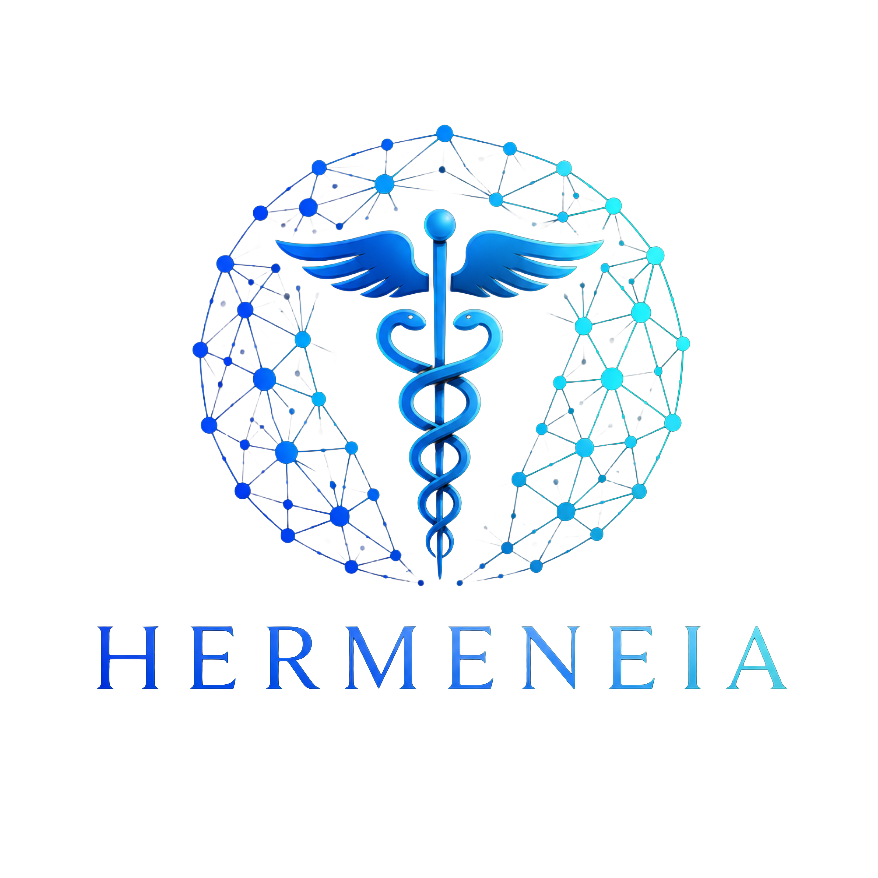

SQL / HEALTHCARE OPERATIONS
Clinical Trial SQL Analytics
Exploring recruitment, follow-up, records retrieval, and operational performance through healthcare data.
VIEW PROJECT →
Healthcare operations, workflow analysis, and data-driven problem solving.
EXPLORE OUR WORKHealthcare problems. Investigated with data.
Independent analytics projects exploring healthcare operations, workflows, systems, and data.
SQL / HEALTHCARE OPERATIONS
Exploring recruitment, follow-up, records retrieval, and operational performance through healthcare data.
VIEW PROJECT →WORKFLOW / SYSTEMS ANALYSIS
Examining workflow efficiency across healthcare imaging and records-retrieval platforms.
VIEW PROJECT →THE APPROACH
Hermeneia's independent projects explore the intersection of healthcare operations, workflow, and data—turning operational questions into structured analyses and practical insights.